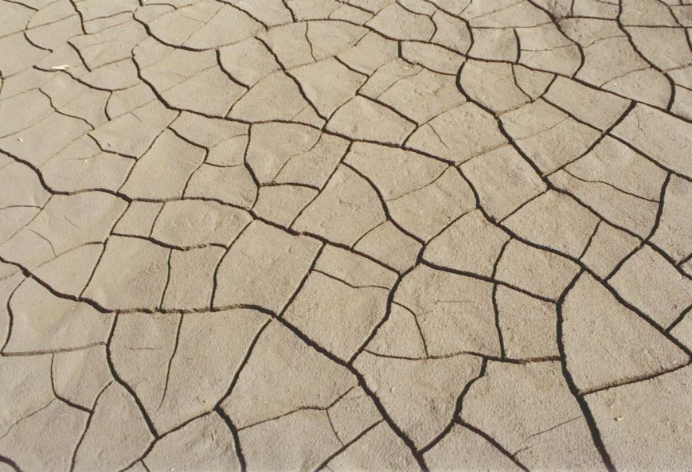

<!DOCTYPE html>
<html lang="en">

<head>
  <meta charset="UTF-8" />
  <meta name="viewport" content="width=device-width, initial-scale=1, shrink-to-fit=no" />
  <title>Global climate change</title>
  <link href="//fonts.googleapis.com/css?family=Roboto:400,500,300" rel="stylesheet" type="text/css" />
  <link rel="stylesheet" href="css/style.css" />
  <link rel="shortcut icon" type="image/x-icon" href="favicon.ico" />
</head>

<body>
  <!-- Add your HTML markup here -->
  <!-- Remember: Use semantic HTML tags like <header>, <main>, <nav>, <footer>, <section> etc -->
</body>

</html>

<body>
  <header">
    <div class="container">
      <h1 style="text-align: center;">Global climate change</h1>
      <h3 style="text-align: center;">Let's talk about climate change. Is it not too late to change the inevitable?.
      </h3>
      <div class="images" style="margin-left">
        
        
      </div>
    </div>
    <nav>
      <ul>
        <li><a href="#Causes of climate change?">Causes of climate change?</a></li>
        <li><a href="#Consequences of climate?-post">Consequences of climate?</a></li>
        <li><a href="#Global warming: what we can do?">Global warming: what we can do?</a></li>
      </ul>
    </nav>
    <p id="header-paragraph"> Throughout the history of the Earth's existence, the climate has changed many times.
      Scientists know about 7 ice ages, which were always followed by warming.</p>
    <p>Warming in our time is not only a natural process, because it is happening 10 times faster than ever.
      Increasingly, scientists are using the term "climate crisis" instead of "climate change" to emphasize the
      seriousness of this problem and the need to solve it now.</p>
    <p>The climate crisis is excessively rapid climate change "due to" an increase in the global average temperature.
      To counter the climate crisis, carbon neutrality should be achieved by 2050 and adaptation to climate change</p>
    </header>
    <main>
      <article id="Causes of climate change?">
        <div id="Causes of climate change?-paragraph">
          <h2 style="text-align: center;">Causes of climate change?</h2>
          <p> Fires, industrial production, land pollution have no less influence on ecology and
            surface heating.</p>
          <p> The greenhouse effect is a normal natural phenomenon. But after the industrial revolution from the middle
            of the 19th century. due to the burning of fossil fuels, the concentration of greenhouse gases in the
            atmosphere began to rise sharply Global warming</p>
          <p>An increase in the global average temperature on Earth means that there are more hot days per year, and
            fewer cold days. This does NOT mean that every day is almost 1 degree warmer than the corresponding day of
            the year in the pre-industrial era</p>
        </div>
        <div class="images" style="margin-left: 30px;">
          
          
        </div>
        </div>
      </article>
      <main>
        <article id="Consequences of climate?">
          <div id="Consequences of climate?-post"></div>
          <h2 tyle="text-align: center;">Consequences of climate?</h2>
          <p> Climate change poses risks to the survival of species on land and in the ocean.
            These risks increase as temperatures rise. A world exacerbated by climate change is losing species a
            thousand times faster than at any time in recorded human history.</p>
          <p>A million species are threatened with extinction over the next few decades. The many threats associated
            with climate change include
            wildfires, extreme weather and invasive pests and diseases. Some species will be able to change
            habitat and survive, while others will not.</p>
          </div>
          <div class="images" style="margin-left: 30px;">
            
            
          </div>
          </div>
        </article>
        <main>
          <article id="Global warming: what we can do?">
            <div id="Global warming: what we can do?-post"></div>
            <h2 style="text-align: center;">Global warming: what we can do?</h2>
            <p>It is important for each country to create its own adaptation policies.
              Their goal is to reduce vulnerability to the effects of climate change.
              Since the manifestations of climate change are very different, adaptation measures and policies are
              developed taking into account the characteristics of a specific country and industry.</p>
            </div>
            <div class="images" style="margin-left: 30px;">
              
              
            </div>
            </div>
          </article>
          </div>
        </main>
        <footer id="footer">
          <h3>Contacts:</h3>
          <p>Pavlenko Irina |
            <a id="footer-link" href="https://www.facebook.com/irenmetal" target="_blank">Facebook</a> |
            Vinnitsa, Ukraine
          </p>
        </footer>
  </body>
</html>